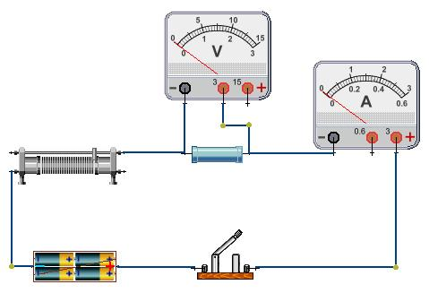
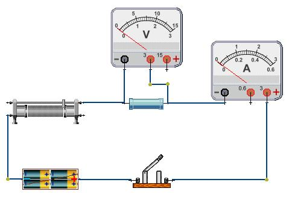

测量未知电阻阻值
测量电阻的阻值。这是用伏安法测量一个电阻阻值的典型实验。在这个实验中，需要使用到电池组一个、单刀单掷开关一只、滑动变阻器一只、电阻一只、安培表与伏特表各一只。
第一步：先通过器件箱，选择需要使用的元件，把它们放在实验区中。
第二步：用鼠标右键点击实验区中的普通电阻，弹出菜单中选择[属性]，这时将弹出电阻元件的参数设置窗体，在这个实验中，设置电阻的阻值为2欧姆。再用同样的方法设置滑动变阻器的属性，总电阻10欧姆，滑片放在最右边。
第三步：下面用导线根据电路原理把这些元件连接起来。连接时，先用鼠标点击需要连接元件的一个接头，然后送开鼠标，把鼠标滑到另一个需要连接的元件接头处，再点击鼠标，一根导线就连接好了。提示：如果在连接中，在空白区域点击鼠标，将在点击鼠标处安置一个导线的固定端。用这样的方法，把电路连接成如图所示。

第四步：用鼠标双击单刀单掷开关，闭合电路。
第五步：在实验区，用鼠标左键按住滑动变阻器的滑片不放，左右滑动鼠标。滑动变阻器的等效电阻随之发生变化，电流表与电压表的指针也随之发生移动。读出电压值与电流值，您就可以计算出电阻的阻值了。
点击主菜单中[编辑]-->[显示电流方向],仿真物理实验室--电学 便可显示电路中的电流方向。
点击主菜单中[编辑]-->[实物图/电学符号],可以使您的电路在实物图与电学符号图间切换。
第一步：先通过器件箱，选择需要使用的元件，把它们放在实验区中。
第二步：用鼠标右键点击实验区中的普通电阻，弹出菜单中选择[属性]，这时将弹出电阻元件的参数设置窗体，在这个实验中，设置电阻的阻值为2欧姆。再用同样的方法设置滑动变阻器的属性，总电阻10欧姆，滑片放在最右边。
第三步：下面用导线根据电路原理把这些元件连接起来。连接时，先用鼠标点击需要连接元件的一个接头，然后送开鼠标，把鼠标滑到另一个需要连接的元件接头处，再点击鼠标，一根导线就连接好了。提示：如果在连接中，在空白区域点击鼠标，将在点击鼠标处安置一个导线的固定端。用这样的方法，把电路连接成如图所示。

第四步：用鼠标双击单刀单掷开关，闭合电路。
第五步：在实验区，用鼠标左键按住滑动变阻器的滑片不放，左右滑动鼠标。滑动变阻器的等效电阻随之发生变化，电流表与电压表的指针也随之发生移动。读出电压值与电流值，您就可以计算出电阻的阻值了。
点击主菜单中[编辑]-->[显示电流方向],仿真物理实验室--电学 便可显示电路中的电流方向。
点击主菜单中[编辑]-->[实物图/电学符号],可以使您的电路在实物图与电学符号图间切换。
下载本课件